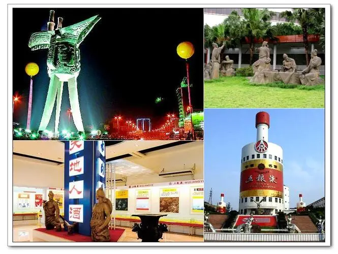

@QA.png)
在中国，酒就是生活。 酒是“何以解忧，唯有杜康”的解忧神器；酒是“晚来天欲雪，能饮一杯无”的洒脱惬意；酒是“醉来忘却巴陵道，梦中疑是洛阳城”里的渺渺乡愁……中国的酒历史，可以追溯到新石器时代中期。大汶口和仰韶文化遗址中都有酒器出土，表明中国人喝酒至少有六七千年的历史了。酒文化源远流长，华夏大地名酒众多， 不过其中能有“酒都”之誉的，也不过只有四处,而四川宜宾便是其中一处。

美酒飘香四海 文化绵延千年
- 宜宾拥有独特的气候、水源、土壤等自然条件，得天独厚的原生态环境赋予了“宜宾酒”天然的优势。 2009年,屏山县叫化岩新石器时代遗址的发现和距今4000多年陶杯的出土,表明在新时器时代晚期，宜宾酒产生的物质基础和技术条件已具备，早期形态的酒开始出现。 先秦时期，农业发展为酿酒提供了物质条件，宜宾先民很早就掌握了人工酿造技术，开创了宜宾酒文化先河。时至汉代，蜀地酿酒、饮酒之风盛行，在江安县出土的宴饮百戏画像石刻便是时人宴饮场景的真实写照。及至唐宋时期，宜宾酒业大发展，“重碧春酒”“荔枝绿”“姚子雪曲”等名酒佳酿辈出。到了明代，宜宾的酿酒工艺日臻完善，产生了 “利川永”“长发升”等作坊。民国时期,宜宾酿酒作坊已遍布城乡各地。1909年一种名为“杂粮酒”的五谷佳酿被更名为“五粮液”,从此锻造一个传世名牌，一段延续至今的酒业传奇…… 古往今来，宜宾名酒佳酿层出不穷，诗酒文化更是绵延千年，文人墨客遗留的诗篇佳作亦能嗅到几抹浓浓的酒香，沁人心脾。 唐宋时期,杨使君在东楼设宴用“重碧酒”款待杜甫，杜甫即席赋诗一首，诗中盛赞：“重碧拈春酒，轻红擘荔枝。宜宾酒在大唐诗史中留下了浓墨重彩的一笔。 著名诗人黄庭坚谪居宜宾期间,为宜宾酒高歌无数。文人墨客对宜宾美酒的颂扬极大地丰富了宜宾酒文化。
酒酒生活
Liquor is fragrant.
历“酒”弥香
在市博物院展出的《酒都酒风——宜宾酒文化专题陈列》，以时间为线索，用百余件文物将具有历史时代印记的宜宾酒史向参观者进行重点展示 。
Wine is full of fun.
酒趣洋溢
“这座城市的空气中都散发出浓浓的酒香。”这是许多外地游客到宜宾后不约而同得出的评价。事实上，伴随着馥郁芬芳的酒香，积淀了数千年的酒文化也早已融入到宜宾的各个角落。 在宜宾众多名胜古迹中，最得酒趣之地莫过于流杯池。
Cultural exchange.
文化交流
1992年,“酒都宜宾国际酒文化研讨会暨海峡两岸酒文化交流会”举行;1998年,首届中国四川名酒文化节在宜宾举行;2008年,宜宾市三届人大常委会第十一次会议审议通过将每年的12月18日定为“中国宜宾酒圣节”(现更名为“白酒文化节”）